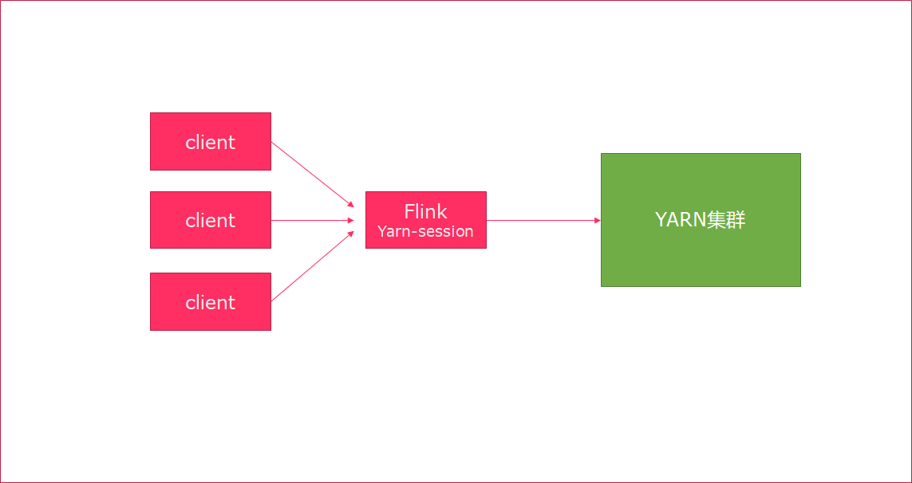

Flink基础介绍
2. Flink集群安装
Flink支持多种安装模式
- local（本地）——单机模式，一般不使用
- standalone——独立模式，Flink自带集群，开发测试环境使用
- yarn——计算资源统一由Hadoop YARN管理，生产测试环境使用
2.1. 伪分布环境部署

- Flink程序需要提交给
Job Client - Job Client将作业提交给
Job Manager - Job Manager负责协调资源分配和作业执行。 资源分配完成后，任务将提交给相应的
Task Manager - Task Manager启动一个线程以开始执行。Task Manager会向Job Manager报告状态更改。例如开始执行，正在进行或已完成。
- 作业执行完成后，结果将发送回客户端（Job Client）
环境准备:
- 下载安装包 https://archive.apache.org/dist/flink/flink-1.6.1/flink-1.6.1-bin-hadoop27-scala_2.11.tgz
- 服务器: node01 (192.168.100.100)
安装步骤：
上传压缩包
解压
tar -zxvf flink-1.6.1-bin-hadoop27-scala_2.11.tgz -C /export/servers/
启动
cd /export/servers/flink-1.6.1 ./bin/start-cluster.sh
使用JPS可以查看到下面两个进程
TaskManagerRunner
StandaloneSessionClusterEntrypoint
访问web界面
http://node01:8081
slot在flink里面可以认为是资源组，Flink是通过将任务分成子任务并且将这些子任务分配到slot来并行执行程序。运行测试任务
bin/flink run /export/servers/flink-1.6.1/examples/batch/WordCount.jar --input /export/servers/zookeeper-3.4.9/zookeeper.out --output /export/servers/flink_data控制台输出:
Starting execution of program
Program execution finished
Job with JobID bb53dc79d510202e8abd95094791a32b has finished.
Job Runtime: 9539 ms
观察WebUI

2.2. Standalone模式集群安装部署
Standalone集群架构

- client客户端提交任务给JobManager
- JobManager负责Flink集群计算资源管理，并分发任务给TaskManager执行
- TaskManager定期向JobManager汇报状态
环境准备:
- 服务器: node01(Master + Slave)
- 服务器: node02(Slave)
- 服务器: node03(Slave)
安装步骤:
上传flink压缩包到指定目录
解压缩flink到
/export/servers目录tar -xvzf flink-1.6.1-bin-hadoop27-scala_2.11.tgz -C /export/servers/
使用vi修改
conf/flink-conf.yaml# jobManager 的IP地址 jobmanager.rpc.address: node01 # JobManager 的端口号 jobmanager.rpc.port: 6123 # JobManager JVM heap 内存大小 jobmanager.heap.size: 1024 # TaskManager JVM heap 内存大小 taskmanager.heap.size: 1024 # 每个 TaskManager 提供的任务 slots 数量大小 taskmanager.numberOfTaskSlots: 2 #是否进行预分配内存，默认不进行预分配，这样在我们不使用flink集群时候不会占用集群资源 taskmanager.memory.preallocate: false # 程序默认并行计算的个数 parallelism.default: 1 #JobManager的Web界面的端口（默认：8081） jobmanager.web.port: 8081 #配置每个taskmanager生成的临时文件目录（选配） taskmanager.tmp.dirs: /export/servers/flink-1.6.1/tmp
slot和parallelism总结
taskmanager.numberOfTaskSlots:2
每一个taskmanager中的分配2个TaskSlot,3个taskmanager一共有6个TaskSlot
parallelism.default:1 运行程序默认的并行度为1，6个TaskSlot只用了1个，有5个空闲
slot是静态的概念，是指taskmanager具有的并发执行能力parallelism是动态的概念，是指程序运行时实际使用的并发能力
使用vi修改slaves文件
node01 node02 node03
使用vi修改
/etc/profile系统环境变量配置文件，添加HADOOP_CONF_DIR目录export HADOOP_CONF_DIR=/export/servers/hadoop-2.7.5/etc/hadoop
分发/etc/profile到其他两个节点
scp -r /etc/profile node02:/etc scp -r /etc/profile node03:/etc
每个节点重新加载环境变量
source /etc/profile
使用scp命令分发flink到其他节点
scp -r /export/servers/flink-1.6.1/ node02:/export/servers/ scp -r /export/servers/flink-1.6.1/ node03:/export/servers/
启动Flink集群
./bin/start-cluster.sh启动/停止flink集群
启动：./bin/start-cluster.sh
停止：./bin/stop-cluster.sh
启动/停止jobmanager 如果集群中的jobmanager进程挂了，执行下面命令启动
bin/jobmanager.sh start
bin/jobmanager.sh stop
启动/停止taskmanager 添加新的taskmanager节点或者重启taskmanager节点
- bin/taskmanager.sh start
- bin/taskmanager.sh stop
启动HDFS集群
cd /export/servers/hadoop-2.7.5/sbin start-all.sh
在HDFS中创建/test/input目录
hdfs dfs -mkdir -p /test/input
上传wordcount.txt文件到HDFS /test/input目录
hdfs dfs -put /export/servers/flink-1.6.1/README.txt /test/input
并运行测试任务
bin/flink run /export/servers/flink-1.6.1/examples/batch/WordCount.jar --input hdfs://node01:8020/test/input/README.txt --output hdfs://node01:8020/test/output2/result.txt
浏览Flink Web UI界面
http://node01:8081
2.3. Standalone高可用HA模式
从上述架构图中，可发现JobManager存在单点故障，一旦JobManager出现意外，整个集群无法工作。所以，为了确保集群的高可用，需要搭建Flink的HA。
HA架构图

环境准备:
- 服务器: node01(Master + Slave)
- 服务器: node02(Master + Slave)
- 服务器: node03(Slave)
安装步骤
在flink-conf.yaml中添加zookeeper配置
#开启HA，使用文件系统作为快照存储 state.backend: filesystem #启用检查点，可以将快照保存到HDFS state.backend.fs.checkpointdir: hdfs://node01:8020/flink-checkpoints #使用zookeeper搭建高可用 high-availability: zookeeper # 存储JobManager的元数据到HDFS high-availability.storageDir: hdfs://node01:8020/flink/ha/ high-availability.zookeeper.quorum: node01:2181,node02:2181,node03:2181
将配置过的HA的
flink-conf.yaml分发到另外两个节点scp -r /export/servers/flink-1.6.1/conf/flink-conf.yaml node02:/export/servers/flink-1.6.1/conf/ scp -r /export/servers/flink-1.6.1/conf/flink-conf.yaml node03:/export/servers/flink-1.6.1/conf/
到节点2中修改flink-conf.yaml中的配置，将JobManager设置为自己节点的名称
jobmanager.rpc.address: node02
在node01的
masters配置文件中添加多个节点node01:8081 node02:8081
分发masters配置文件到另外两个节点
scp /export/servers/flink-1.6.1/conf/masters node02:/export/servers/flink-1.6.1/conf/ scp /export/servers/flink-1.6.1/conf/masters node03:/export/servers/flink-1.6.1/conf/
启动
zookeeper集群启动
HDFS集群启动
flink集群分别查看两个节点的Flink Web UI
kill掉一个节点，查看另外的一个节点的Web UI
注意事项
切记搭建HA，需要将第二个节点的
jobmanager.rpc.address修改为node02
2.4. Yarn集群环境
在一个企业中，为了最大化的利用集群资源，一般都会在一个集群中同时运行多种类型的 Workload。因此 Flink 也支持在Yarn上面运行；flink on yarn的前提是：hdfs、yarn均启动
集群规划
JobManager: node01
WorkManager: node01 node02 node03
步骤
修改Hadoop的yarn-site.xml，添加该配置表示内存超过分配值，是否将任务杀掉。默认为true。
运行Flink程序，很容易超过分配的内存。
<property> <name>yarn.nodemanager.vmem-check-enabled</name> <value>false</value> </property>分发yarn-site.xml到其它服务器节点
scp yarn-site.xml node02:$PWD scp yarn-site.xml node03:$PWD
启动HDFS、YARN集群
start-all.sh
2.5. yarn-session
Flink运行在YARN上，可以使用yarn-session来快速提交作业到YARN集群。我们先来看下Flink On Yarn模式，Flink是如何和Yarn进行交互的。

上传jar包和配置文件到HDFS集群上
申请资源和请求AppMaster容器
Yarn分配资源AppMaster容器，并启动JobManager
JobManager和ApplicationMaster运行在同一个container上。 一旦他们被成功启动，AppMaster就知道JobManager的地址（AM它自己所在的机器）。 它就会为TaskManager生成一个新的Flink配置文件（他们就可以连接到JobManager）。 这个配置文件也被上传到HDFS上。 此外，AppMaster容器也提供了Flink的web服务接口。 YARN所分配的所有端口都是临时端口，这允许用户并行执行多个Flink申请worker资源，启动TaskManager

yarn-session提供两种模式: 会话模式和分离模式
2.6. 会话模式
- 使用Flink中的yarn-session（yarn客户端），会启动两个必要服务
JobManager和TaskManager - 客户端通过yarn-session提交作业
- yarn-session会一直启动，不停地接收客户端提交的作用
- 有大量的小作业，适合使用这种方式

使用步骤:
在flink目录启动yarn-session
bin/yarn-session.sh -n 2 -tm 800 -s 1 -d # -n 表示申请2个容器， # -s 表示每个容器启动多少个slot # -tm 表示每个TaskManager申请800M内存 # -d 表示以后台程序方式运行 yarn-session.sh脚本可以携带的参数: Required -n,--container <arg> 分配多少个yarn容器 (=taskmanager的数量) Optional -D <arg> 动态属性 -d,--detached 独立运行 （以分离模式运行作业） -id,--applicationId <arg> YARN集群上的任务id，附着到一个后台运行的yarn session中 -j,--jar <arg> Path to Flink jar file -jm,--jobManagerMemory <arg> JobManager的内存 [in MB] -m,--jobmanager <host:port> 指定需要连接的jobmanager(主节点)地址 使用这个参数可以指定一个不同于配置文件中的jobmanager -n,--container <arg> 分配多少个yarn容器 (=taskmanager的数量) -nm,--name <arg> 在YARN上为一个自定义的应用设置一个名字 -q,--query 显示yarn中可用的资源 (内存, cpu核数) -qu,--queue <arg> 指定YARN队列 -s,--slots <arg> 每个TaskManager使用的slots数量 -st,--streaming 在流模式下启动Flink -tm,--taskManagerMemory <arg> 每个TaskManager的内存 [in MB] -z,--zookeeperNamespace <arg> 针对HA模式在zookeeper上创建NameSpace使用flink提交任务
bin/flink run examples/batch/WordCount.jar如果程序运行完了，可以使用
yarn application -kill application_id杀掉任务yarn application -kill application_1554377097889_0002
2.7. 分离模式
- 直接提交任务给YARN
- 大作业，适合使用这种方式

使用flink直接提交任务
bin/flink run -m yarn-cluster -yn 2 ./examples/batch/WordCount.jar # -m jobmanager的地址 # -yn 表示TaskManager的个数查看WEB UI